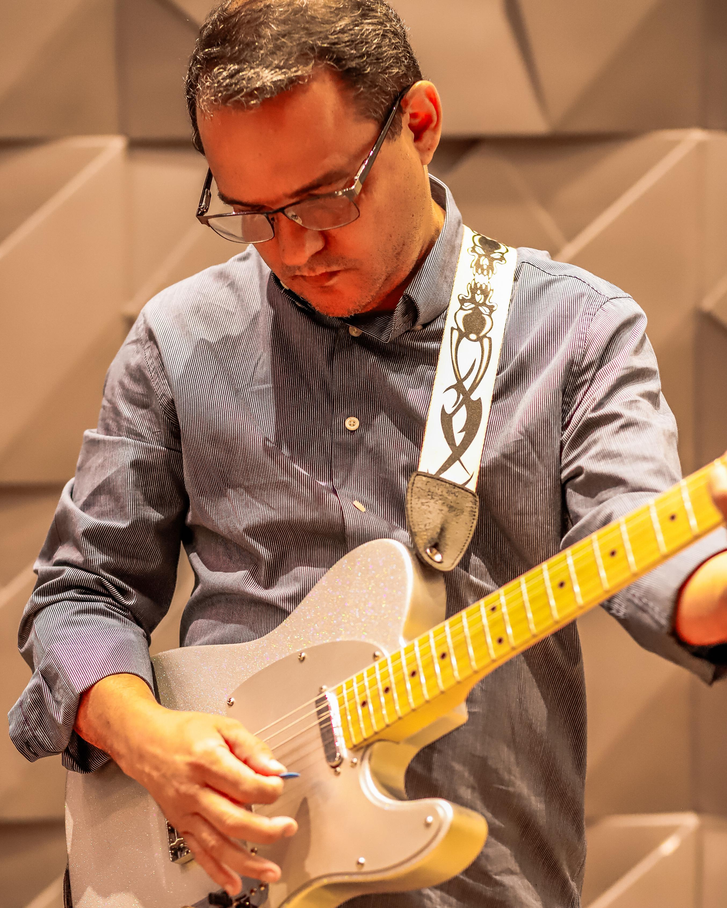
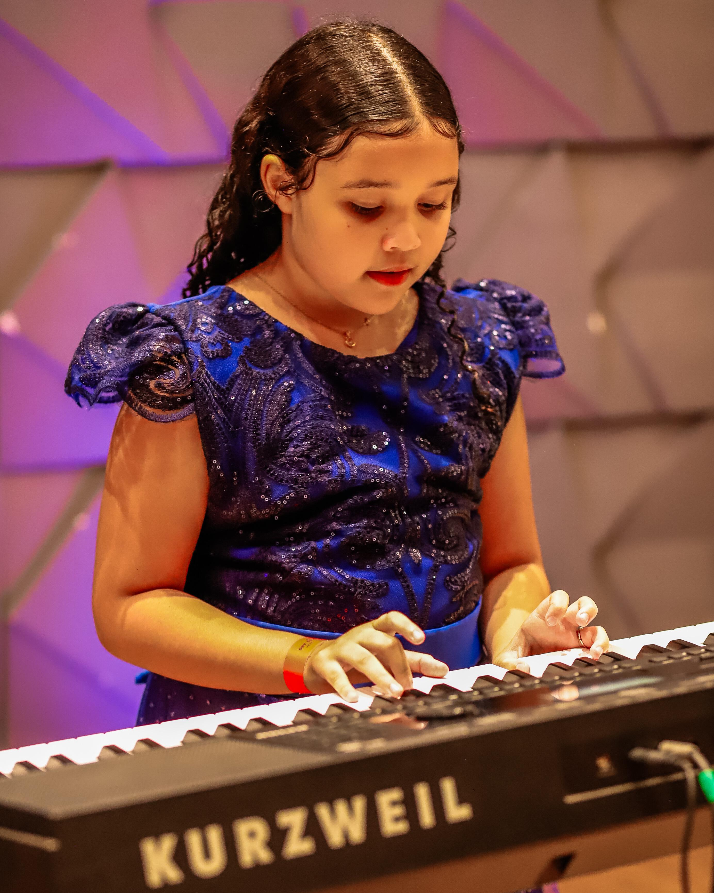
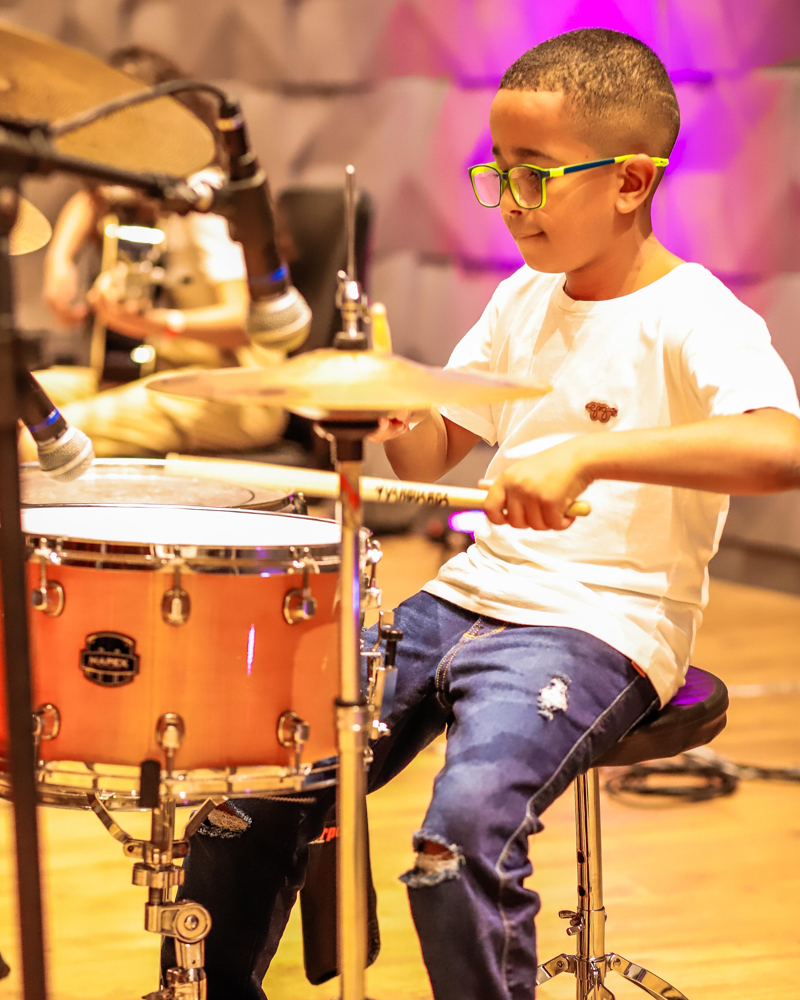
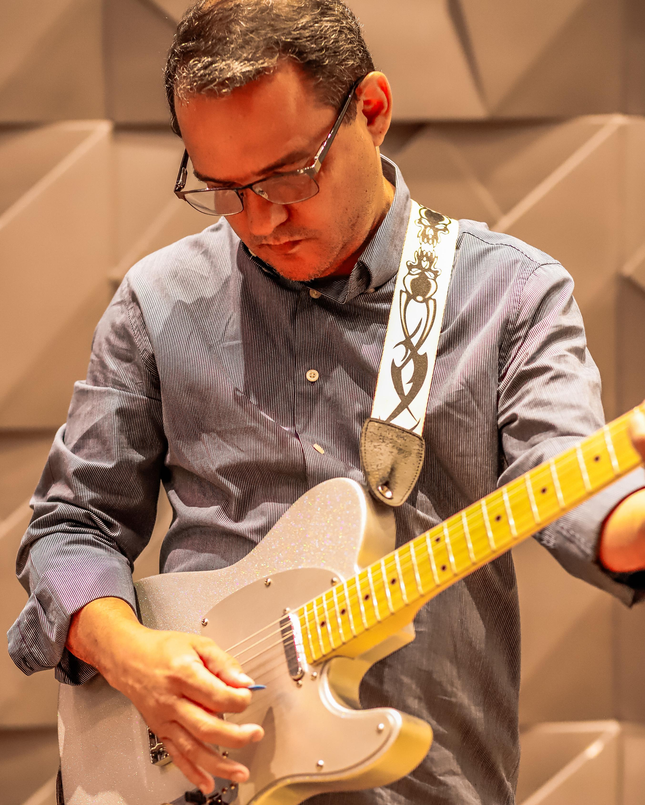
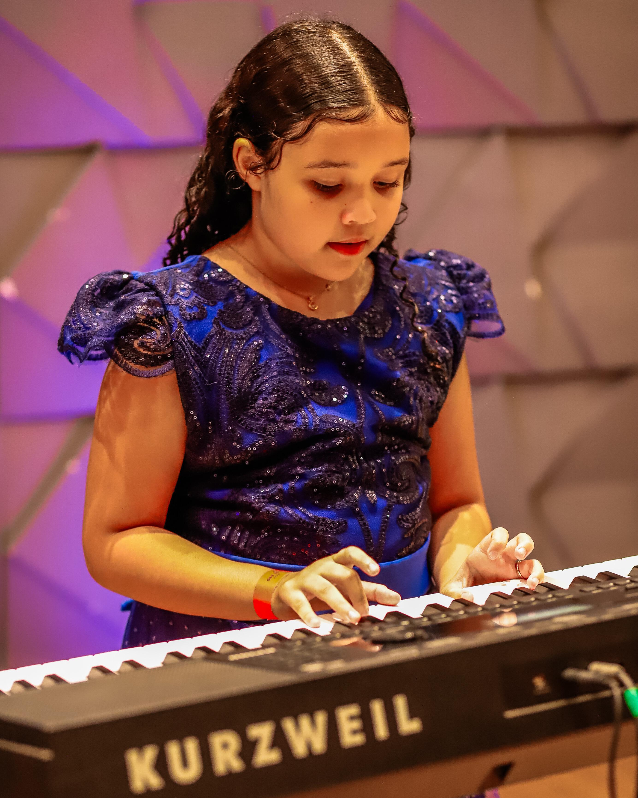
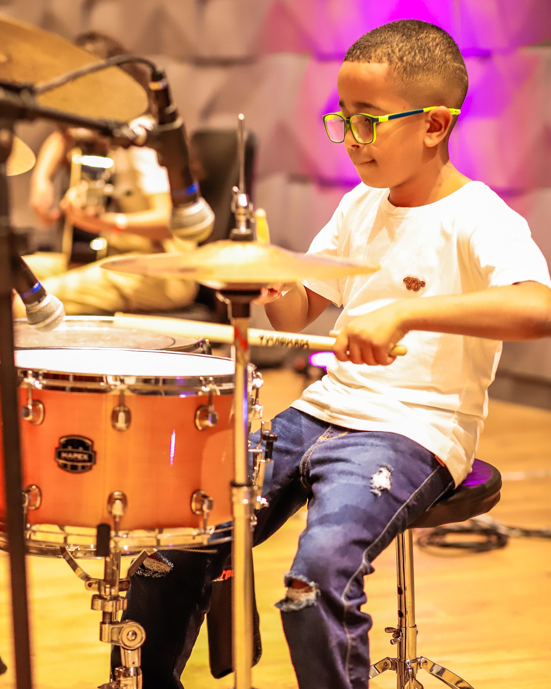

Viva a Música, Sinta a Emoção!
Transforme sua paixão em talento! Na Ritmar, você aprende com os melhores e vive a música de forma única. Seja qual for seu sonho musical, estamos aqui para torná-lo realidade!
Descubra Nossos CursosNossa História
A Escola de Música Ritmar nasceu do sonho de transformar vidas através da música. Fundada por músicos apaixonados pelo ensino, seu nome reflete a importância do ritmo em nossas vidas e culturas.
Desde o início, buscamos criar um ambiente acolhedor, onde alunos de todas as idades possam explorar e desenvolver seu talento musical. Com uma equipe de professores experientes, nos tornamos referência no ensino de instrumentos, canto e teoria musical.
Hoje, seguimos crescendo e impactando vidas, oferecendo uma experiência única para quem deseja aprender ou aperfeiçoar sua musicalidade. Seja iniciante ou experiente, a Ritmar é o lugar onde a música ganha vida! 🎶
Nossos Cursos
Violão
Aprenda a tocar violão do básico ao avançado com técnicas práticas e teoria aplicada.
Saiba MaisPiano
Desenvolva suas habilidades no piano com aulas personalizadas para todas as idades.
Saiba MaisTeoria Musical
Aprenda a ler partituras, escalas, harmonia e melodia para aprimorar seu conhecimento musical.
Saiba Mais